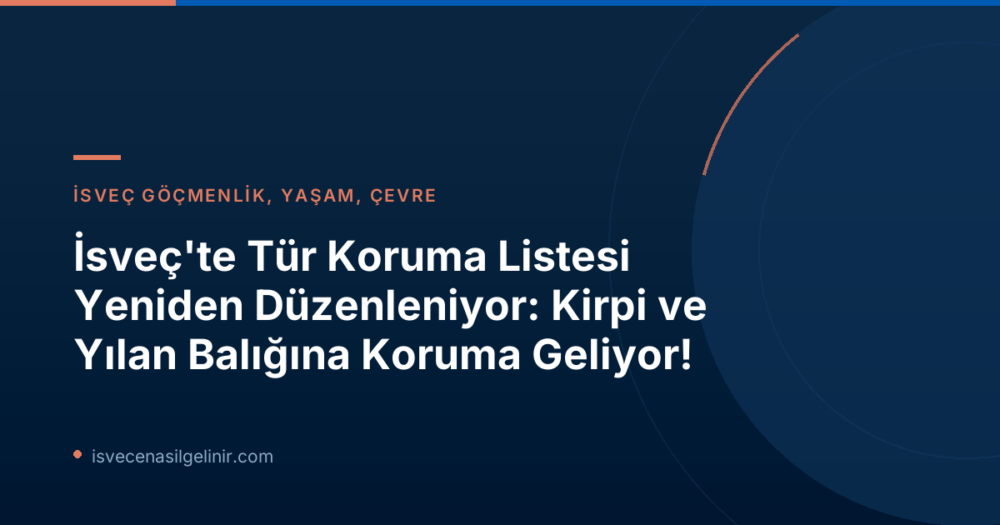

İsveç'in Yeni Tür Koruma Stratejisi: Dengeli Bir Yaklaşım
İsveç hükümeti ve İsveç Demokratları (SD) tarafından duyurulan bu reform paketi, mevcut tür koruma listesini (Artskyddslistan) hem güncellemeyi hem de daha "isabetli" hale getirmeyi hedefliyor. İklim Bakanı Romina Pourmokhtari ve Sivil İşler Bakanı Erik Slottner'ın açıklamalarına göre, listenin ana amacı arazi sahiplerinin mülkiyet haklarını güçlendirmek ve aynı zamanda habitat değişikliği gibi büyük ölçekli tehditlerle, türlerin doğrudan toplanması gibi daha küçük ölçekli tehditler arasında ayrım yapmak.
Tür Koruma Reformu Temel Bilgileri
| Mevcut Tür Koruma Listesi | Yaklaşık 300 tür |
| Yeni Önerilen Tür Koruma Listesi | Yaklaşık 230 tür |
| Yürürlük Tarihi | 1 Kasım 2026 (Önerilen) |
| Duyuru Tarihi | 14 Temmuz 2026 |
Koruma Alanına Yeni Giren ve Çıkarılan Türler
Yeni Koruma Altına Alınanlar:
- Kirpi (Igelkott): Son 15 yılda popülasyonunun neredeyse yarıya indiği belirtilen kirpi, ilk kez artskyddsförordningen'e (tür koruma yönetmeliği) dahil ediliyor.
- Yılan Balığı (Ål): Yılan balığı da listeye eklenen önemli türlerden biri.
- Diğerleri: Örtlav (Lichen), Raggtaggsvamp (Mantars türü), Dagfjäril (Gündüz Kelebeği).
Listedeki Koruması Kaldırılanlar:
- Mavi Anemon (Blåsippa)
- Çuha Çiçeği (Gullviva)
- Sarmaşık (Murgröna)
- Önemli Değişiklik: Yaban Orkidesi "Knärot" (Creeping Lady's Tresses). Bu orkide türü, sık sık orman kesimlerini durdurmasıyla biliniyordu. Yeni düzenlemeyle doğrudan koruma altından çıkarılıp, "Knärot'a zarar verme amacı taşımayan faaliyetler için istisna olanağı" sunan yeni bir kategoriye alınıyor. Bu, ormancılığın bu nedenle durdurulmasının önüne geçmeyi hedefliyor.
Ormancılık, Tarım ve Enerji Sektörlerine Esneklik
Hükümet, yeni kurallarla birlikte genel istisnalar ve yeni muafiyet gerekçeleri getirecek. Erik Slottner'ın ifadesiyle, "İsabetli bir koruma, neyin yasaklandığı kadar, neyin yasaklanmasının gerekmediğiyle de ilgilidir." Tarım ve ormancılık faaliyetleri için genel istisnalar yapılabilecek. Toplumsal öneme sahip çıkarlar (samhällsviktiga intressen) için, özellikle enerji üretimi ve savunma gibi alanlarda yeni muafiyetler getirilecek. Bu, ülkenin yeşil enerji hedeflerine ulaşmasında ve güvenlik kapasitesini artırmasında esneklik sağlamayı amaçlıyor.
İsveç'teki yaşam ve vatandaşlık süreçleri hakkında daha fazla bilgi edinmek için sverigemedborgarskapsprov.com sizin için değerli bir kaynak olacaktır.
Gelecek Adımlar ve Beklentiler
Listenin tamamının önümüzdeki günlerde açıklanması bekleniyor. Yeni kuralların 1 Kasım'da yürürlüğe girmesi öngörülüyor. Bu reform, çevre örgütleri ve sivil toplum tarafından yakından takip ediliyor. Özellikle koruması kaldırılan türler ve getirilen istisnalar konusunda tartışmaların yoğunlaşması bekleniyor.
Sonuç
İsveç'in doğa koruma yaklaşımında attığı bu adım, ekolojik dengeyi korurken ekonomik faaliyetlerin önünü açmayı hedefliyor. Kirpi ve yılan balığı gibi sembolik türlerin korunması, kamuoyunun dikkatini bu konuya çekecektir.
Referanslar:
İsveç'te Yaşam ve Göçmenlik Hakkında Daha Fazla Bilgi Edinmek İster Misiniz?
İsveç'e yerleşme, yaşam koşulları, yasal süreçler ve vatandaşlık testi hakkında güncel ve kapsamlı bilgilere ulaşmak için sitemizi keşfedin. Uzman danışmanlık hizmetlerimizden faydalanarak İsveç hayallerinizi gerçeğe dönüştürün.